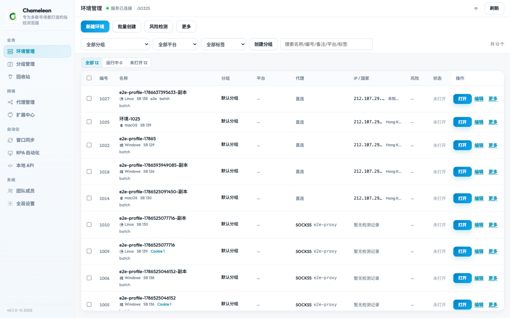
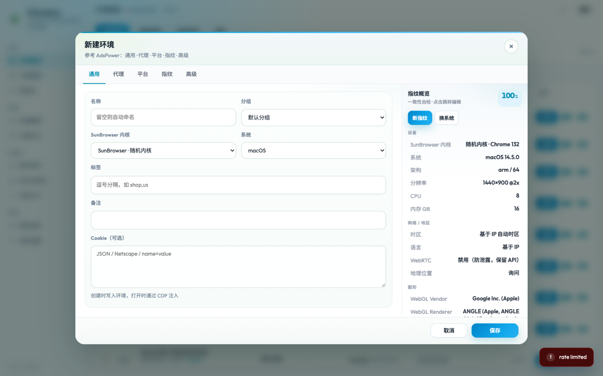
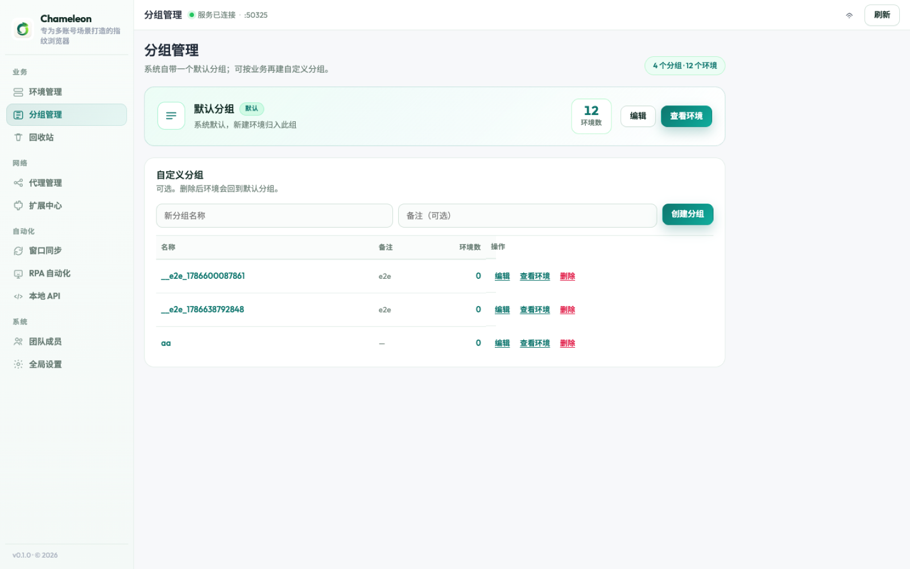
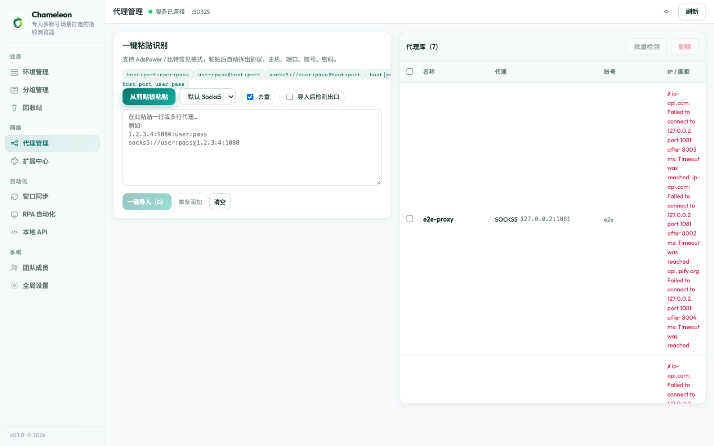
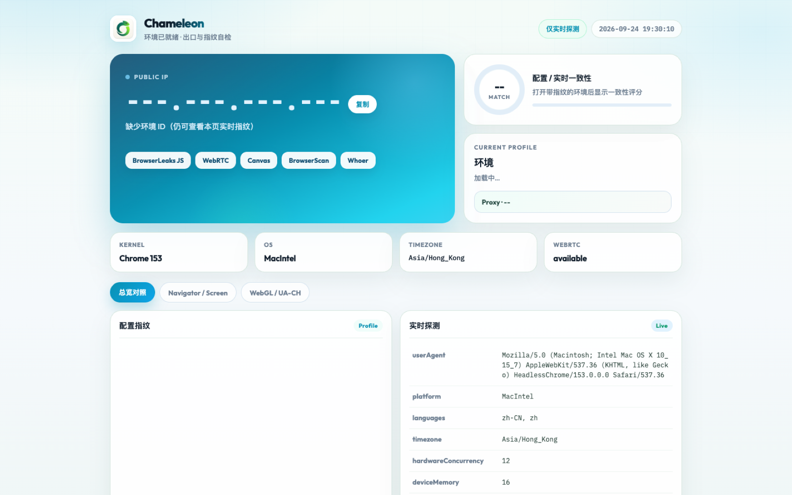
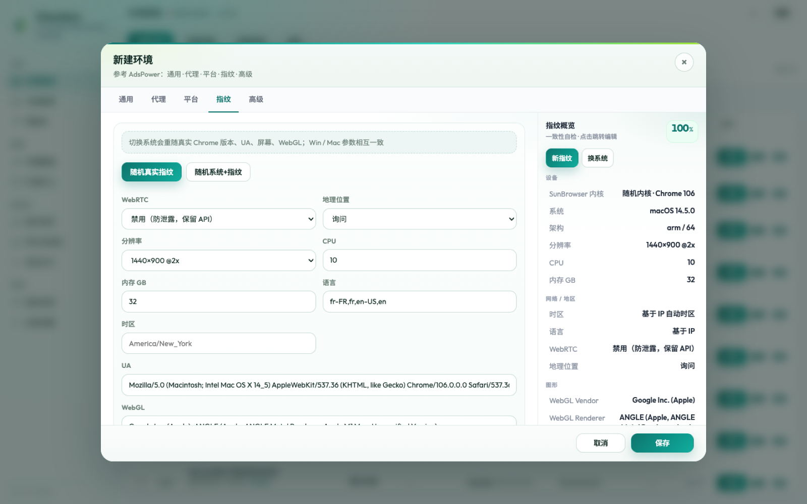

01
独立环境多开
每个环境独立 Profile，分组、批量创建、回收站，打开即用。
专为多账号场景打造的指纹浏览器。独立环境、真实一致指纹、代理库与风险预检，整套青蓝色产品语言贯穿 App 与官网。

Product
从环境隔离、代理出口到指纹一致性与启动自检，把日常多账号操作收敛到一个桌面端。
每个环境独立 Profile，分组、批量创建、回收站，打开即用。
UA / OS / 屏幕 / WebGL / 硬件相互匹配，侧栏一致性概览可一键换指纹。
代理库批量粘贴导入，出口 IP、时区联动，降低环境与出口错配。
对照环境 / 关联 / 行为三层线索，开跑前先看风险提示。
打开环境后自动展示出口 IP、配置与实时指纹对照。
本地接口可对接 RPA / Playwright，适合批量与自动化流水线。
Design System
以变色龙青蓝为主轴，搭配薄荷绿与柠绿点缀，按钮采用渐变与轻阴影，整体更偏高级桌面产品。
Screenshots
真实界面，不是概念图。





v0.2.0 Universal DMG，同时支持 Apple Silicon（M 系列）与 Intel。源码不公开。